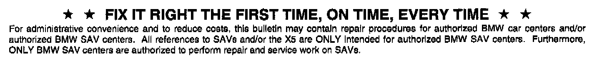

Engine Controls - Loss of Power/Long Crank Time
SI B12 17 07Engine Electrical Systems
June 2008
Technical Service
This Service Information bulletin supersedes SI B12 17 07 dated October 2007.
[NEW] designates changes to this revision
SUBJECT
N52K - DME Software Improvements
MODEL
E83 (X3) with the N52K engine produced from 8/2006 up to [NEW] 6/2008
SITUATION
The customer may complain of any of the following situations:
1. Poor throttle response or lack of power when accelerating at lower speeds or from a stop
2. The engine may crank too long before starting or may occasionally require a second attempt.
3. Loss of power at idle or when slowing to a stop, in vehicles equipped with an automatic transmission
All of these situations would not cause a fault code to be set in the DME.
CAUSE
DME software calibration
CORRECTION
If any faults are stored, they must be investigated and corrected prior to proceeding further.
[NEW] On a customer complaint basis only, reprogram the DME using the "Update Software" option and the latest version of Progman.
[NEW] The current DME software may be identified using the diagnosis path:
Control-module functions / DME Motor Electronics / Identification B
[NEW] This latest MY07/MY08 X3 DME software calibration can be identified as listed below:
^ Part number, programmed control module 7593826 or higher
^ Program version 0049RKOMG70S
^ Calibration ID 17587166
^ Calibration ID 2 7593827
Important Notes:
[NEW] On vehicles equipped with a GM6 automatic transmission, the EGS software must also be at the most current level. If not, it will need to be updated as well.
[NEW] Refer to SI B24 08 07 for information concerning EGS software identification and programming.
If, during DME programming, the following errors occur:
^ Diagnostic trouble 2000 (CoApi) EDIABAS or ECU description file error
^ Diagnostic trouble 1000 (CoApi) General fault
Proceed by following the next steps as outlined in SI B09 04 06:
^ End the current Progman session.
^ Ignition "OFF" for 1 minute.
^ Restart the OPS/OPPS head by disconnecting for at least 10 seconds - then reconnect.
^ Ignition "ON" to KL15.
^ Begin a new Progman session answer "No" to modules replaced.
^ Repeat: DME / Programming / Update software.
^ This procedure may need to be repeated more than once.
If problems persist do not replace the DME! Submit a PuMA DME TC case for further assistance.
WARRANTY INFORMATION
Covered under the terms of the BMW New Vehicle Limited Warranty.

Disclaimer